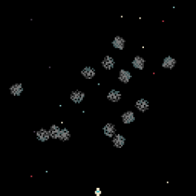

Esp Little game engine by igor
https://hackaday.io/project/164205-esp-little-game-engine
This guide is written shando69
Welcome to this User Guide for the ESP Little Game Engine by Igor. This engine is for the esp8266 processor and can be found at https://github.com/corax89/esp8266_game_engine
The engine has a virtual screen resolution of 128x128 pixels, allows 16 colours, 1 background layer, 32 soft sprites with collision tracking and rotation and a maximum of 20kb for the game and variables. It is capable of approximately 900,000 operations per second at a drawing rate of 20 frames per second. It can also control up to eight buttons.
This guide is mainly for the online compiler and debugger, which can be found at https://corax89.github.io/esp8266Game/index.html
The Virtual Machine is written in JavaScript and has access to 65,534 bytes of memory (though only 20,000 bytes are available on the device itself, since the remaining memory goes to the screen buffer and library). The compiler supports int and unsigned char types, one-dimensional arrays & debugging.
The base palette of 16 colours looks like this and is changeable by use of the setpallette Function:
Over the next few pages, I’ll go through each part of the Code Editor in more detail, starting with the Buttons.
NB: This engine is still under development and features may be added, or removed by the developers. This manual is correct as at June 2019.
At the top of the screen are 8 buttons:
From left to right, these buttons are:
asm this button updates the memory window (see below) of the page based on the code in the source window. NB: this will display $00 if the code in the source window is anything other than pure Assembler code.
compile this button compiles C code in the source window and updates the memory window of the page. It will also display any compile errors in the information window. For example, trying to use an undefined variable, results in this message:
1 unknown token i
Which lets you know both the error message and the line number where the error occurs. I will provide a complete listing of error messages later.
save this button will save the current code as rom.bin and download it to the directory usually associated with the internet browser you are currently using.
sprite this button opens the sprite editor (see later for more information on how to use it):
listing this button opens the listing window to show the assembler version of the code in the source window:
debug this button opens the debug window (see later for more information on how to use it):
help this button opens the help window which displays a list of the C Functions available for use in the source window (see later for explanations of each Function):
ENG this button is a drop-down that changes the UI language of the Code Editor between the two available languages (ENG = English & RUS = Russian)
The top left section displays the contents of the Memory of the Virtual Machine:
This window will only be populated once a program has been compiled, or you have written Assembler code and clicked the asm button, and it displays the Memory contents as a comma separated list of hexadecimal values.
The bottom left section displays the monitor:
This section is split into 3 distinct parts:
LEFT this area displays a hexadecimal listing of the memory, split into 16 byte rows. Using the ‘+’ and ‘-‘ buttons, you can move through the displayed listing row by row. You can also enter a row number in the box between the ‘+’ and ‘-‘ buttons to jump directly to that row in memory.
MIDDLE this area displays the Screen of the Virtual Machine. The available display area (128x128 pixels) starts approximately 2 lines down from the top and ends approximately 3 lines up from the bottom.
RIGHT this area displays the values of the various Registers (pc = Program Counter, op = Operation (this details the memory contents of the Program Counter, along with the Carry, Zero & Negative Flags, where a 0 = False & a 1 = True), R0 – R15 = the 16 available Registers). Each Register is displayed as a 2 byte hexadecimal value and the R0 – R15 Registers also have the equivalent decimal value in brackets next to the hex value. Above the Register window is a drop-down that allows you to select the relevant CPU Speed in hertz (the available values are: 100, 500, 1,000, 5,000, 10,000, 25,000, 50,000, 100,000, 200,000, 500,000). Finally, above the CPU Speed drop-down are 3 buttons:
step this button allows you to step through your code by incrementing the Program Counter. The line currently being executed will be highlighted in dark blue in the source window.
run this button starts your code running as long as you have remembered to compile it first.
stop this button stops your running code. It will also highlight (again in dark blue) the line in the source window where your code has stopped.
The right hand section displays your C, or Assembler, code:
This is a fairly simple Code Editor that shows the line number in the right-hand margin and the code in the rest of the window. Whilst there is no autocomplete functionality, the Code Editor will automatically set tab spacing in your code. Below the Code Editor are a drop-down that allows you to select a sample program (see below for list) and a button (load example) to load the selected sample program into the Code Editor. NB: you can create code in either C or Assembler.
List of Sample Programs
asteroids an Asteroids clone
breakout a Breakout clone
flappybird a Flappy Bird clone
dragon a fractals generator
maze generate a simple maze generator
mines a minesweeper clone
particle a simple particle generator
pi a generator that prints PI
platform a simple platformer
snake a snake clone (like on the old Nokia phones!)
space a simple space game

sprite a demonstration of sprites
Finally, at the bottom of the screen, is the Information Section. This displays information about your Program:
As shown above, this is currently displaying the following:
program size the size of your Program (in bytes)
variables the size of memory required for your Variables (in bytes)
total occupied memory this is basically the sum of ‘program size’ & ‘variables’ (in bytes)
The contents of this window will change depending on what action you are currently undertaking. For example, if compiling, any errors will be displayed here.
this window allows you to create Sprites, using a few simple tools:
At the top right of the main window are two buttons (a pen and a blob). The pen tool is used to draw (using the mouse) in the colour selected (by clicking on the colour palette at the bottom of the main window). The blob tool is used to colour the whole of the main window in the selected colour.
At the bottom of the main window is the colour palette. Clicking on any colour in the palette will change the colour shown in the display (immediately to the left of the Sprite size value – 22x19 above)
Immediately below the main window are several buttons and other settings. From left to right, these are:
cls this clears the main window, but will leave the colour selected by using the blob button. It will also update the text area at the bottom of the window.
→ this moves the cursor one pixel to the right.
↑ this moves the cursor one pixel up.
← this moves the cursor one pixel to the left.
↓ this moves the cursor one pixel down.
1 BIT this check box allows the selection of 1-Bit pixels.
RLE this check box allows you to select whether Run Length Encoding (RLE) applies to the Sprite. Basically, this will shorten the Sprite data using an in-built RLE algorithm and will usually save some space, which can be extremely useful if you are writing a large game. For example, I created a simple blue cloud on a black background and RLE reduced the Sprite data by approx. 45%, saving 300+ bytes.
[] this displays the currently selected colour.
22x19 this displays the size of the Sprite (in pixels)
Immediately below these buttons etc. is the text area that displays the Sprite as a comma separated list of hexadecimal values. You use copy and paste to transfer this data into your code.
For example (the Sprite code is highlighted in the code below):
char wall1[] = {0xaa,0xba,0xaa,0xaa,0xbb,0xbb,0xbb,0xbb,0xaa,0xaa,0xab,0xaa,0xaa,0xaa,0xab,0xaa,0xbb,0xbb,0xbb,0xbb,0xaa,0xba,0xaa,0xca,0xaa,0xbc,0xcc,0xca,0xaa,0xba,0xaa,0xca};
This window will only display data if your program is running. Then it will display the details of your Variables and your Sprites:
If you select the variable tab, you will see a list of all the Variables in your game and the current value assigned to each of them. As you can see above, this game has 4 Variables (#END will always be displayed as it shows the end of your code). The data displayed, from left to right, is:
Variable name (as a string)
Variable location in Memory (in hexadecimal)
Variable value (depends on how the Variable was declared)
If you select the sprites tab, you will see a list of all of your Sprites, complete with details of all of the type data:
The best way to use the debug window is whilst stepping through your code one line at a time, as, this way, you can see exactly what each line of code is doing to both your Variables and your Sprites. Though it can also be useful just to watch the changes whilst playing the game normally, as you may be able to see any issues as they arise and not have to step through the code hundreds of times.
There are over 35 game-specific Functions available for writing your programs in the Code Editor: As a general rule, most Functions will operate on the current x & y co-ordinates. Not also that the Screen co-ordinates start at 0, 0 at the Top Left and end at 127, 127 at the Bottom Right. For chars, coordinates start at 0, 0 at the Top Left and end at 20, 15 at the Bottom Right. One char is 6x8 pixels.
char putchar(char)
prints a character to the Screen at the current x & y co-ordinates.
putchar(10);
int puts(char[])
prints a 1-D char array to the Screen at the current x & y co-ordinates, complete with a New Line character.
puts(“Press any key”);
int putn(int);
prints an integer to the Screen at the current x & y co-ordinates.
putn(time);
int printf(char[], arg-list);
Prints a string to the Screen at the current x & y co-ordinates. See the following website for more information regarding this Function:
https://www.tutorialspoint.com/c_standard_library/c_function_printf.htm
printf(“Press a key”);
int random(int max);
returns a pseudo-random number between 0 and max. NB: This Function will only return Integer values.
x = random(15);
int getchar();
returns the character located at the current x & y co-ordinates.
x = getchar();
int getkey();
returns the value of the key currently being pressed on the keyboard. The value returned will be one of the following (the number in brackets is the integer value representing the key):
KEY_UP (1), KEY_LEFT (4), KEY_DOWN (2), KEY_RIGHT (8), KEY_A (16), KEY_B (32)
NB: UP, DOWN, LEFT & RIGHT map to the Arrow keys, A is the Space key and B is the z key.
key = getkey();
int getpixel(int x, int y);
returns the contents of the Pixel at the co-ordinates denoted by x & y.
redraw = getpixel(x * 2, offset + y * 2);
int spritegetvalue(int n, int type);
returns the value for the Sprite specified in n, according to the type.
The available values for type are:
S_X the x co-ordinate
S_Y the y co-ordinate
S_SPEEDX the Speed in the x direction
S_SPEEDY the Speed in the y direction
S_WIDTH the Width
S_HEIGHT the Height
S_IS_ONEBIT whether the Sprite is 1 bit, or not. 1 = True, 0 = False
S_ANGLE the Angle of the Sprite (0-360)
S_LIVES number of Lives for the Sprite
S_COLLISION the ID of the Sprite that this Sprite is currently colliding with
S_SOLID whether the Sprite is Solid, or not. 1 = True, 0 = False
S_GRAVITY whether the Sprite is affected by Gravity, or not. 1 = True, 0 = False
S_ON_COLLISION the Function to execute when the Sprite collides with another Sprite. NB: when entering the name of the Function, just use the name, not the brackets. For example, use bombcollision, not bombcollision().
S_ON_EXIT_SCREEN the Function to execute when the Sprite moves off Screen. NB: when entering the name of the Function, just use the name, not the brackets. For example, use exit, not exit().
S_IS_SCROLLED whether the Sprite is scrolled with the Screen, or not. 1 = True, 0 = False
S_FLIP_HORIZONTAL flip Sprite horizontally 1 = True, 0 = False
x = spritegetvalue(1, S_LIVES);
int angbetweenspr(int n1, int n2);
returns the angle, in degrees, between the two Sprites denoted by n1 & n2.
x = angbetweenspr(1, 2);
int gettimer(int n);
returns the current value of the Timer, in milliseconds, denoted by n. Total 8 timers from 0 to 7
x = gettimer(0);
void settimer(int n, int time);
sets the Timer denoted by n to the time, in milliseconds, denoted by time.
settimer(0, 1000);
void delayredraw();
delays the redrawing of the Screen for a small period of time.
delayredraw();
void clearscreen();
clears the Screen
clearscreen();
void setpallette(int n, int r5g6b5);
changes the Palette colour denoted by n to the colour denoted by r5g6b5 (as an RGB value).
setpallette(14, 0xE718);
void setcolor(int col);
sets the current Pen colour to the colour from the Palette denoted by col (i.e. a value between 0 & 15).
setcolor(0);
void scroll(int dir);
scrolls the Screen in the direction indicated by dir.
2 = x – 1 (i.e. Left)
1 = y – 1 (i.e. Up)
0 = x+ 1 (i.e. Right)
any other number = y + 1 (i.e. Down)
scroll(2);
void putpixel(int x, int y);
puts a Pixel at the co-ordinates on the Screen denoted by x & y.
putpixel(stars[i + 32],stars[i]);
void getsprite(int n, int address);
gets the Sprite denoted by address (i.e. the name of the Sprite in its definition) and assigns it to the Sprite denoted by n.
getsprite(1, bird);
void putsprite(int n, int x, int y);
puts the Sprite denoted by n at the co-ordinates on the Screen denoted by x & y.
putsprite(1, 5, 60);
void spritesetvalue(int n, int type, int value);
sets the value denoted by value of the type denoted by type for the Sprite denoted by n.
(see spritegetvalue for details of type)
spritesetvalue(i, S_WIDTH, 8);
int getspriteinxy(int x, int y);
gets the Sprite at the co-ordinates on the Screen denoted by x & y.
x = getspriteinxy(x1, y1);
int gettileinxy(int x, int y);
gets the Tile at the co-ordinates on the Screen denoted by x & y.
x = gettileinxy(x1, y1);
void setimagesize(int size);
sets the size of the Image using the multiplier denoted by size.
setimagesize(2);
void gotoxy(int x, int y);
moves the Cursor to the Text screen co-ordinates denoted by x & y.
gotoxy(6,6);
void line(int x, int y, int x1, int y1);
draws a Line on the Screen between the co-ordinates denoted by x, y and x1, y1.
line(x1, y1, x2, y2);
void putimage(int address, int x, int y, int w, int h);
puts an image on the Screen. The image is denoted by address. The Screen co-ordinates by x & y, and the image width & height by w & h.
putimage(eat_spr, eatx * 3, eaty * 3, 3, 3);
void putimage1bit(int address, int x, int y, int w, int h);
puts a 1bit image on the Screen. The image is denoted by address. The Screen co-ordinates by x & y, and the image width & height by w & h.
putimage1bit(startscreen, 0, 16, 64, 32);
void putimagerle(int address, int x, int y, int w, int h);
puts an RLE image on the Screen. The image is denoted by address. The Screen co-ordinates by x & y, and the image width & height by w & h.
putimagerle(earth, 0, 0, 16, 16);
void tone(int freq, int delay);
generates a square wave of the specified frequency. Frequency: the frequency of the tone in hertz. Allowed data types: unsigned int. Duration: the duration of the tone in milliseconds.void loadrtttl(int address, int isLoop);
Loads a string containing a rtttl format melody. address: name of the array containing the string. isLoop: repeat the melodyvoid playrtttl();
start playbackvoid pausertttl();
pause playbackvoid stoprtttl();
stop playbackint savedata(int name, int array, int count);
The function saves to the record with the name "name" the number of array elements equal to "count". Returns the number of items saved. If the returned number is less than the requested, then the save did not happen. Then the number of cells equal to the returned number remained in the store.int loaddata(int name, int array);
Loads the array "array" from the entry "name", returns the number of loaded items, or 0 if the download failed.*int malloc(int i);
this is a C Function that allocates the Memory denoted by i and returns a pointer to it
For more information see:
https://www.tutorialspoint.com/c_standard_library/c_function_malloc.htm
str = malloc(15);
void free(*i);
this is a C Function that deallocates the Memory denoted by i previously allocated by a call to malloc
For more information see:
https://www.tutorialspoint.com/c_standard_library/c_function_free.htm
free(str);
void setparticle(int gravity, int count, int time);
creates a Particle. The Gravity value is denoted by gravity, where a value of 0 denotes no Gravity and an integer value denotes the amount of Gravity (Added to the speed along the y axis every frame). The number of Particles to be displayed is set by count and the length of Time that the Particle should run for is set by time (in milliseconds).
setparticle(0, 4, 1000);
void setemitter(int time, int dir, int dir1, int speed);
sets the Emitter for the Particle. The time for the Emitter to run is denoted by time (in milliseconds), the x direction is denoted by dir, the y direction is denoted by dir1 and the speed of the Particles is denoted by speed.
setemitter(50, angle - 10, angle + 10, 9);
void drawparticle(int x, int y, int color);
draws the Particle at the co-ordinates denoted by x & y and in the colour denoted by color.
drawparticle(64, 64, 6);
void loadtile(int address, int imgwidth, int imgheight, int width, int height);
loads a Tile denoted by address, setting the required width & height, based on the original width & height of the Tile (imgwidth & imgheight).
loadtile(maze, 8, 8, 15, 15);
void drawtile(int x, int y);
draws a Tile at the Screen co-ordinates denoted by x & y.
drawtile(4 ,4);
int gettileinxy(int x, int y);
gets the Tile at the Screen co-ordinates denoted by x & y.
x = gettileinxy(x1, y1);
If you are new to programming, don’t worry as I’ll take you through one of the sample games in the next section. Also, check out a few of these more general resources on learning C programming:
https://www.tutorialspoint.com/cprogramming/
https://www.guru99.com/c-programming-tutorial.html
This compiler is written in javascript. It takes less than 2000 lines of code. It only supports the features listed here.
In this section I’ll go through the breakout sample game line by line to explain how it works and give you an idea on how to use some of the available Functions.
One thing I will point out before we begin is that you should probably lay out your code as follows:
define your Variables
write your Functions (in an order that makes sense to you – for example, having all the button handling code together)
write your main() function
Whilst it’s not compulsory, I think it’s a good idea to structure your code as shown above. This sort of structure makes it a lot easier to find sections of your code (helpful for adding new features to your game), as well as helping you debug when things don’t quite work correctly!
One last thing, while I’m on the subject, remember to fully document your code, using a liberal smattering of Comments (see below). These not only explain, to yourself and others, what each of your Functions actually does, but can also help tremendously when debugging.
C Comments can be single-line like this (using // at the beginning):
// This is a single line C Comment
or, multi-line, like this (using /* at the beginning and */ at the end):
/* This C Comment
goes over more than
one line */
So, below is the Breakout code along with my comments regarding each line (I will be using the /* comment to show my explanations and they will be in italics as well):
/* this line defines a Variable called BALL_SPEED and sets its initial value to 3 */
#define BALL_SPEED 3
/* these next 3 create Sprites called ‘brick’, ‘ball’ and ‘deck’, where brick is a 12x8 pixel Sprite, ball is an 8x9 pixel Sprite and deck is a 26x8 pixel Sprite */
//12x8
char brick[] = {0xc,0xcc,0xcc,0xcc,0xcc,0xc0,0xeb,0x66,0x66,0x6c,0x6c,0xfc,0xeb,0x66,0x66,0xe6,0xe6,0x9c,0xeb,0x66,0x6e,0x6e,0x69,0xfc,0xeb,0x66,0xe6,0xe6,0x96,0xfc,0xeb,0x6e,0x6e,0x69,0x66,0xfc,0xeb,0xe6,0xe6,0x96,0x66,0xfc,0xe,0xee,0xee,0xee,0xee,0xe0};
//8x9
char ball[] = {0x0,0xb2,0x2b,0x0,0x4,0x22,0x22,0x40,0xb2,0x2a,0xa2,0x2b,0x22,0xa2,0x22,0x22,0x22,0xa2,0x22,0x22,0xb2,0x22,0x22,0x2b,0x4,0x22,0x22,0x40,0x0,0xb2,0x2b,0x0};
//26x8
char deck[] = {0xa,0xaa,0xaa,0xaa,0xaa,0xaa,0xaa,0xaa,0xaa,0xaa,0xaa,0xa0,0x55,0x55,0x55,0x55,0x55,0x55,0x55,0x55,0x55,0x55,0x55,0x55,0x55,0x55,0x55,0x55,0x55,0x55,0x55,0x55,0x55,0x55,0x55,0x55,0x55,0x55,0x55,0x55,0x55,0x55,0x55,0x55,0x55,0x55,0x55,0x55,0x55,0x55,0x55,0x55,0x55,0x55,0x55,0x55,0x55,0x55,0x55,0x55,0x55,0x55,0x55,0x55,0x55,0x55,0x55,0x55,0x55,0x55,0x55,0x55,0x55,0x55,0x55,0x55,0x55,0x55,0x55,0x55,0x55,0x55,0x55,0x55,0xf,0xff,0xff,0xff,0xff,0xff,0xff,0xff,0xff,0xff,0xff,0xf0};
/* this line creates an integer Variable ‘x’ with an initial value of 60 */
int x = 60;
/* this line creates 3 char Variables, ‘game’, ‘count’ & ‘key’ */
char game, count, key;
/* this is the start of the user-defined Functions* /
/* this Function checks for a Sprite collision. It has one input Parameter (an integer called ‘n’) and no Return value (the void keyword) */
void balloncollision(int n){
/* check if Sprite 31 (the ball) has collided with Sprite 30 (the deck) */
if(spritegetvalue(31, S_COLLISION) == 30){
/* if there is such a collision, then set the X Speed of the ball Sprite using a mathematical calculation (basically it takes the current X Speed and subtracts 8 and also subtracts the current value of x, all of which is then divided by 2) */
spritesetvalue(31, S_SPEEDX, (spritegetvalue(31, S_X) - 8 - x) / 2);
/* next, draw the Particles at the Screen co-ordinates denoted by the x value of the ball plus 4 and the y value of the ball, using the Palette colour 2. */
drawparticle(spritegetvalue(31, S_X) + 4, spritegetvalue(31, S_Y), 2);
/* check if the ball has gone below the deck and, if so, set the Y Speed of the ball to the negative Y Speed of the ball (i.e. it will start moving back up the Screen) */
if(spritegetvalue(31, S_Y) < 108)
spritesetvalue(31, S_SPEEDY, 0 - spritegetvalue(31, S_SPEEDY));
}
else{
/* if there is no such collision then set both the X Speed & Y Speed of the ball to their respective negative values */
spritesetvalue(31, S_SPEEDX, 0 - spritegetvalue(31, S_SPEEDX));
spritesetvalue(31, S_SPEEDY, 0 - spritegetvalue(31, S_SPEEDY));
/* finally, draw the Particles at the Screen co-ordinates denoted by the x value of the ball plus 4 and the y value of the ball, using the Palette colour 3. */
drawparticle(spritegetvalue(31, S_X) + 4, spritegetvalue(31, S_Y), 3);
}
}
/* this Function is called when the ball collides with a brick. It has one input Parameter (an integer called ‘n’, which denotes the brick that has been collided with) and no Return value */
void brickoncollision(int n){
/* check that it is a brick (i.e. 0 – 23 = bricks) */
if(n < 24){
/* if so, then set the number of Lives of that brick to 0 (so that it won’t be drawn to the Screen) and reduce the value of count by 1 */
spritesetvalue(n, S_LIVES, 0);
count--;
}
}
/* this Function is called to initialise the game. It has no input Parameters and no Return value */
void init(){
/* clear the Screen */
clearscreen();
/* set the game Variable to 1 and the Count Variable to 24 (the number of bricks) */
game = 1;
count = 24;
/* set up the Particle and its Emitter. The Particle is set using a value of 2 for Gravity, a run Time of 10 milliseconds and a count of 500 Particles. The Emitter is set using a value of 100 for Time (in milliseconds), a value of 1 for the X direction, a value of 259 for Y direction and a Speed value of 6. */
setparticle(2, 10, 500);
setemitter(100, 1, 259,6);
/* loop through the bricks, setting their Width to 12, their X Speed to 0, their Y Speed to 0, their On_Collision to the brickoncollision() Function and finally place the brick on the Screen at the co-ordinate denoted by the calculation in the putSprite() Function */
for(char i = 0; i < 24; i++){
getsprite(i, brick);
spritesetvalue(i, S_WIDTH, 12);
spritesetvalue(i, S_SPEEDX, 0);
spritesetvalue(i, S_SPEEDY, 0);
spritesetvalue(i, S_ON_COLLISION, brickoncollision);
putsprite(i, (i / 3) * 16, 8 + (i % 3) * 10));
}
/* set the ball values. X Speed to the negative of the current speed plus a random amount (maximum of double current speed). Set the Y Speed to the negative of the current speed. Set the S_ON_COLLISION Function to balloncolision and finally, place the ball on the Screen at the co-ordinates denoted by x and 102. */
getsprite(31, ball);
spritesetvalue(31, S_SPEEDX, -BALL_SPEED + random(BALL_SPEED * 2));
spritesetvalue(31, S_SPEEDY, -BALL_SPEED);
spritesetvalue(31, S_ON_COLLISION, balloncollision);
putsprite(31, x, 102);
/* set the deck values. Width to 24, X Speed to 0 & Y Speed to 0. Finally, place the deck on the Screen at the x co-ordinate denoted by the value of the x Variable & the y co-ordinate of 110 */
getsprite(30, deck);
spritesetvalue(30, S_WIDTH, 24);
spritesetvalue(30, S_SPEEDX, 0);
spritesetvalue(30, S_SPEEDY, 0);
putsprite(30, x, 110);
}
/* this Function is called when the game is finished. It has no input Parameters and no Return value */
void gameover(){
/* this line moves the cursor to x = 6, y = 7 */
gotoxy(6, 7);
/* does Variable ‘count’ equal 0? (i.e. no more bricks left) */
if(count == 0)
/* if count equals 0 then output the text “you win!” to the cursor position */
puts("you win!!");
else
/* if count does not equal 0 then output the text “game over” to the cursor position */
puts("game over");
/* wait for the 0 key to be pressed */
while(getkey() != 0){}
/* wait for the 0 key to be released */
while(getkey() == 0){}
/* call the init Function to initialize the game. */
init();
}
/* this Function is called by the main() Function to check for game over. It has no input Parameters and no Return value */
void onexit(){
/* check if the Y value of the ball Sprite is greater than 120 */
if(spritegetvalue(31, S_Y) > 120)
/* if it is then call the gameover() Function (i.e. the ball has gone below the deck) */
gameover();
/* else, check if the Y value of the ball is less than 0 (i.e. at the top of the Screen) */
else if(spritegetvalue(31, S_Y) < 0)
/* if it is then set the Y Speed of the ball to BALL_SPEED (i.e. a positive value to move it away from the top of the Screen) */
spritesetvalue(31, S_SPEEDY, BALL_SPEED);
/* check if the X value of the ball is greater than 120 (i.e. at the right of the Screen) */
if(spritegetvalue(31, S_X) > 120)
/* if it is then set the X Speed of the ball to -BALL_SPEED (i.e. a negative value to move it away from the right of the Screen) */
spritesetvalue(31, S_SPEEDX, -BALL_SPEED);
/* else, check if the X value of the ball is less than 0 (i.e. at the left of the Screen) */
else if(spritegetvalue(31, S_X) < 0)
/* if it is then set the X Speed of the ball to BALL_SPEED (i.e. a positive value to move it away from the left of the Screen) */
spritesetvalue(31, S_SPEEDX, BALL_SPEED);
}
/* this is the main loop of the game. EVERY game MUST have this Function, or the Compiler will NOT compile the game. */
void main(){
/* this line keeps the main loop of the game running forever. It works because the value 1 will ALWAYS return True */
while(1){
/* call the init() Function to initialize the game*/
init();
/* this line keeps running the loop below all the time that the game Variable is True. The loop will stop when game becomes False */
while(game){
/* read the keyboard and store the returned value in the key variable */
key = getkey();
/* if the returned value is the LEFT key AND the value of the x Variable is greater than 0 then take 3 from the value of x (i.e. move the deck left). The greater than check stops the deck moving off the left edge of the Screen */
if(key == KEY_LEFT && x > 0)
x -= 3;
/* if the returned value is the RIGHT key AND the value of the x Variable is less than 96 then add 3 to the value of x (i.e. move the deck right). The less than check stops the deck moving off the right edge of the Screen */
else if(key == KEY_RIGHT && x < 96)
x += 3;
/* if the returned value is neither the LEFT key, nor the RIGHT key then set the X Speed of the deck to 0 (i.e. not moving) */
else
spritesetvalue(30, S_SPEEDX, 0);
/* put the deck (Sprite 30) at the co-ordinate denoted by the x Variable and a y value of 110 */
putsprite(30, x, 110);
/* call the onexit() Function */
onexit();
/* if the count Variable equals 0 (i.e. no more bricks are left) then call the gameover() Function */
if(count == 0)
gameover();
/* delay the drawing of the Screen for a short period of time */
delayredraw();
}
}
}
That’s it! Hopefully, I have explained the code above so you can understand it. If not, feel free to comment at (TODO: Need somewhere for comments).
The website below will help you to load your .bin files onto your actual esp8266-based device:
https://hackaday.com/2019/03/11/esp8266-gets-its-game-on-with-open-source-engine/
Below is a complete list of all Error Messages generated by the Compiler (English versions):
"the "+ par +" function has already been declared"
this message is displayed if you try to declare a Function using a name that has already been used. par gives you the name of the Function.
"the function "+ par +" does not match the prototype"
this message is displayed if you try to use a Function that does not have the same number and type of parameters and output as the Function definition. par gives you the name of the Function.
"expected type definition"
this message is displayed if you try to use a Function that has Variables, but at least one of the Variables does not have a type definition.
"expected comma or closing bracket"
this message is displayed if your code is missing either a comma or a closing bracket.
"expected curly opening bracket"
this message is displayed if your code is missing an opening curly bracket ({).
"expected closing bracket in function " + par
this message is displayed if you one of your Functions is missing a closing bracket. par gives you the name of the Function.
"expected argument in function " + par
this message is displayed if you try to use a previously declared Function without the required arguments. par gives you the name of the Function.
"expected opening bracket in function " + par
this message is displayed if one of your Functions is missing an opening bracket. par gives you the name of the Function.
"the function "+ par +" cannot return a value"
this message is displayed if you try to use a Function and expect it to return a value, but the declared Function does not return a value. par gives you the name of the Function.
"working with local arrays is not supported"
this message is displayed if you try to use a local array.
"array length not specified"
this message is displayed if you try to use an array without specifying its length.
"invalid array declaration"
this message is displayed if your array is not declared correctly.
"invalid number of arguments"
this message is displayed if you try to use a Function, but do not use the correct number of arguments.
"expected opening bracket in construction " + par
this message is displayed if you are trying to use a construction (if, while, for or switch) and have not included the opening bracket.
"no switch design"
this message is displayed if you try to use a case statement, but have not created the switch construction.
"colon is expected"
this message is displayed if your code is missing a colon.
"expected number"
this message is displayed if you try to use a non-numeric value when the code expects a numeric value.
"unsupported variable declaration"
this message is displayed if you have used an invalid Variable declaration.
"expected brace"
this message is displayed if you have not correctly applied the closing brace ()), following an opening brace (().
"warning, unsigned not implemented"
this message is displayed if you try to use an unsigned Variable.
"unknown token " + par
this message is displayed if you have used an invalid token.
"main function entry point not found"
this message is displayed if your code does not contain a main ( ) Function.
NB: In the above Messages, ‘par’ is a parameter passed in by the Compiler and usually refers to the Function name where the error occurs.
Several of the above Messages, relate to the fact that not all C constructs etc. are usable by this engine.